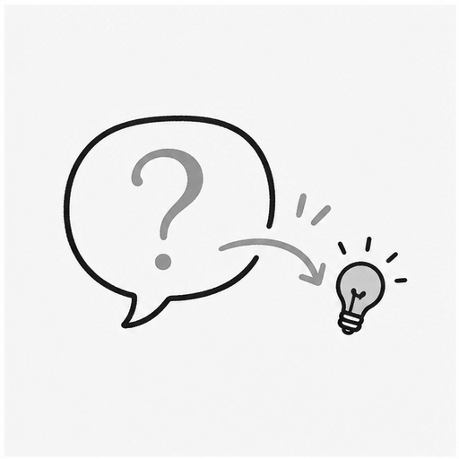

2강
내 소개 링크 만들기
자기소개와 포트폴리오 원고를 정리하고, Google Sites로 공개 링크까지 완성합니다.
가져가는 것: 공개 링크HAM MEDIA Academy
처음 배우는 사람이 부끄러워하지 않고 다시 물어볼 수 있는 조용한 강의실. AI를 어려운 기술이 아니라 자기 일을 더 잘하게 만드는 실전 도구로 배웁니다.

01
AI가 낯선 분들이 검색어가 아니라 자기 상황을 문장으로 설명하고, 모르는 화면을 캡처해서 다시 묻는 법을 배웁니다.
수업의 목표는 멋진 프롬프트를 외우는 것이 아닙니다. 집에 돌아가서도 혼자 다시 물어볼 수 있는 첫 질문 기준을 몸에 남기는 것입니다.
기본 문장, 캡처 질문, 1주일 연습 과제를 가져갑니다.
1강 수강료 5만원 · 2시간 실습 · 5명이 모이면 개강합니다.
저는 [나이/상황/수준]입니다.
지금 [하려는 일]을 하고 있습니다.
그런데 [막힌 부분]에서 멈췄습니다.
초보자도 이해할 수 있게 1번, 2번, 3번 순서로 설명해주세요.
영상보다 중요한 건, 수업 뒤에 남는 질문 기준입니다.
2~4강
1강에서 말문을 열었다면, 2강부터는 결과물을 하나씩 남깁니다. 링크, 영상 구성안, 컴퓨터 정리 기준으로 AI가 내 일 안에 들어오는 길을 만듭니다.
실습반 수강료는 문의 주시면 안내해 드립니다.
2강
자기소개와 포트폴리오 원고를 정리하고, Google Sites로 공개 링크까지 완성합니다.
가져가는 것: 공개 링크3강
오래 해온 일이나 자주 받은 질문을 골라 첫 영상 주제, 제목, 구성안, 오프닝 멘트로 바꿉니다.
가져가는 것: 첫 영상 구성안4강
내 폴더, 엑셀, 사진 자료를 안전한 테스트 기준 안에서 AI와 함께 정리해봅니다.
가져가는 것: 컴퓨터 정리 기준기준
불안을 자극해서 유료 도구나 어려운 기능으로 밀어 넣지 않습니다. 처음 배우는 사람이 다시 질문할 수 있게 만드는 데 집중합니다.
강사
스타벅스 13년 교육과정 운영과 강사 육성 경험을 바탕으로, 처음 배우는 사람이 다시 물어볼 수 있게 안내합니다.
"나는 AI를 어려운 기술로 가르치려는 게 아니라, 50대도 자기 일을 더 잘하게 만드는 실전 도구로 가르치려 한다."
스타벅스 코리아에서 13년 동안 매장 운영과 교육과정 운영, 강사 육성을 경험했습니다. 델라카사를 8년 창업·운영했고, 지금은 HAM MEDIA에서 현장 경험을 AI와 콘텐츠로 다시 정리하고 있습니다.
신청/문의